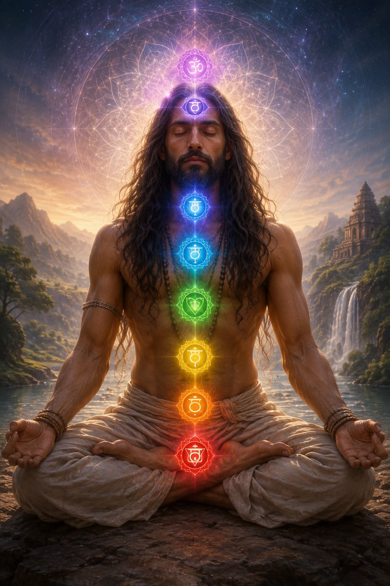
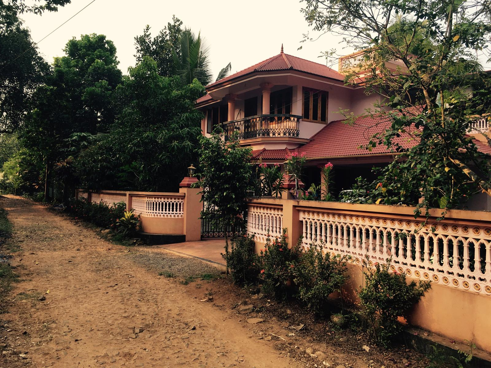
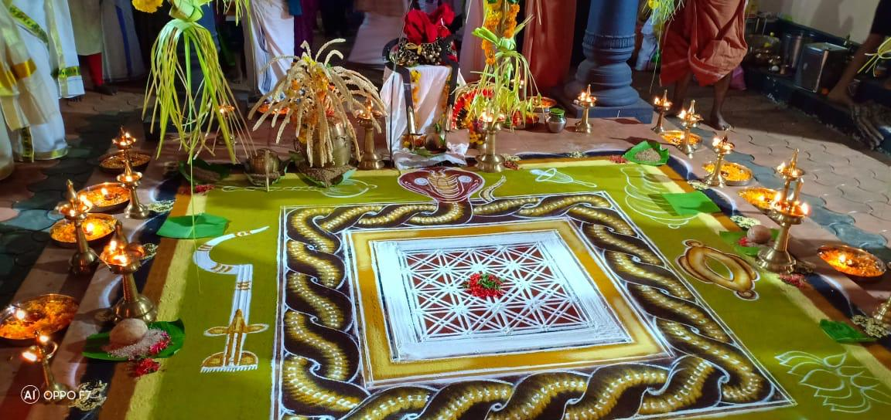
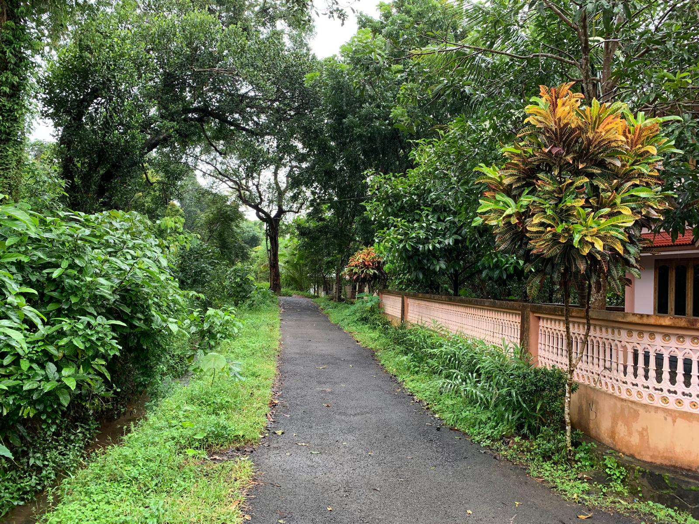

The Authentic Style of Kayakalpa.
Acharya's Authority across Sorengo-Lugano & India.
Not a commercial fitness workout, but the authentic internal yogic alchemy of the Siddhas for cellular rejuvenation, vital life-force transmutation, and profound inner peace. Imparted directly by Acharya Sooryanarayan at Parvati Yoga School in Sorengo (Lugano), active for many years, and at Santhivanam Ashram in Kerala (India).

Sushumna Nadi & 7 Chakras
Ancient Siddha Physiology

Acharya Sooryanarayan
Living Spiritual Authority

Spinal Rejuvenation
Transmutation of Vital Ojas

Parvati Yoga Sanctuary
Sorengo (Lugano), Switzerland

Santhivanam Ashram Villa
Kanakamala Foothills, Kerala

Nagakalam Mandala
Tantric Sacred Geometry

The Meditative Pathway
Dawn Chankramana
Sushumna Nadi & 7 Chakras
Ancient Siddha Physiology
Acharya Sooryanarayan
Living Spiritual Authority
Spinal Rejuvenation
Transmutation of Vital Ojas
Parvati Yoga Sanctuary
Sorengo (Lugano), Switzerland
Santhivanam Ashram Villa
Kanakamala Foothills, Kerala
Explore the School & Teachings
Select a path to explore the style, the Acharya's lineage, the dual sanctuaries, or classes in Sorengo-Lugano.
The Kayakalpa Style
Millenary Siddha alchemy: spinal rejuvenation, cellular vitality, and 7-chakra balance.
Acharya Sooryanarayan
Living spiritual preceptor helping seekers for over three decades through authentic yogic wisdom and direct transmission.
Two Living Sanctuaries
The sacred bridge connecting Sorengo-Lugano (Switzerland) and Santhivanam Ashram (Kerala, India).
Parvati Yoga School
The historic studio in Sorengo (Canton Ticino): stillness, sacred focus, and individualized guidance.
Courses & Practice
Beginner courses, spinal regeneration, maha kundalini, and residential retreats in India.
Contact & Booking
Request a free trial class in Sorengo or connect directly with our studio on WhatsApp.
"True youthfulness is not an outward illusion, but the purification of the vital life force residing along the spine, awakening every cell to its primal potential."
Kayakalpa Yoga: The Path of Cellular Preservation & Spiritual Awakening
Kayakalpa Yoga is an ancient yogic path dedicated to the preservation of physical health, mental vitality, and spiritual awakening. Throughout history, human beings have sought longevity while maintaining strength, vigour, youthfulness, and inner balance. Kayakalpa Yoga provides a systematic approach to achieving these goals through the practice of Pancha Kosa Yajna, the transformation of the five sheaths or dimensions of human existence.
Physical Health
Strength, vigour, youthfulness, and physiological longevity.
Mental Vitality
Reprogramming inner resolve and emotional equanimity.
Pancha Kosa
Transformation across the five dimensions of human existence.
Spiritual Realisation
Chathur Dhyana and the experience of Absolute Oneness.
Kayakalpa Yoga • Living Sadhana & Transmission
Space reserved for master photo of Kayakalpa Yoga transmission, posture alignment, or serene practice environment.
(Space reserved • photo can be added later)The Five Transformations (Pancha Kosa Yajna)
Pancha Kosa Yajna represents the systematic alchemical transformation of the five sheaths, purifying the human vehicle from gross physical form to the unbounded bliss of pure consciousness.
1. Annamaya Kosa Yajna
This stage focuses on the physical body. Through specific yogic exercises, the practitioner develops strength, flexibility, balance, control, vitality, and endurance. These practices help maintain health and youthfulness for many years.
2. Pranamaya Kosa Yajna
This transformation concerns the vital energy body. Vigorous pranayama, or breathing practices, purify the subtle energy channels and eliminate toxins. As the channels become clear, life energy flows smoothly, nourishing the body and revitalising the cells at their deepest level.
3. Manomaya Kosa Yajna
At this stage, the mind is transformed from its lower states into higher levels of consciousness through various forms of meditation. Through Sankalpa (positive intention or inner resolve), practitioners reprogramme their mental patterns and cultivate the ability to shape their destiny.
4. Vijnanamaya Kosa Yajna
This level develops the intellectual body. Through higher understanding and self-inquiry, the individual intellect becomes connected with the universal intellect. The practitioner begins to realise their true nature beyond personal limitations.
5. Anandamaya Kosa Yajna
This is the state of pure Being and bliss. Since ancient times, humanity has searched for answers to profound questions:
Through disciplined practice, Kayakalpa Yoga elevates consciousness beyond the limitations of the mind and guides the seeker towards direct experience of these truths.
Chathur Dhyana: The Four Paths of Meditation
Kayakalpa Yoga describes four progressive levels of meditation known as Chathur Dhyana, or the Four Paths.
1. Chandrayana
Meditation upon the lunar energy, which predominantly influences the three lower chakras:
This practice promotes stability, emotional balance, and grounding.
2. Sooryayana
Meditation upon the solar energy. This dynamic force moves upward through the energy system and primarily influences:
It awakens inner strength, expression, and spiritual aspiration.
3. Mahayana
Meditation on the mind and its various levels. The practitioner progresses from the lower emotional states toward higher awareness and universal wisdom, transcending personal limitations.
From reactive emotional patterns to higher witnessing awareness and universal wisdom.
Transcending personal limitations into universal wisdom.
4. Sahasrayana
The highest state of meditation and spiritual realisation. Here, one experiences oneself as an inseparable part of the Universe. The distinction between the individual and the universal dissolves. Questions fade away as profound silence reveals the answers.
"Kayakalpa Yoga is ultimately a journey of transformation, guiding the practitioner from physical wellbeing to spiritual realisation through the purification of body, energy, mind, intellect, and consciousness itself."
Transmutation of Ojas Energy & Spinal Decompression
While Western fitness yoga stimulates only surface muscles and dissipates energy, the Kayakalpa style addresses the biological roots of aging. It applies an exact synergy of Bandhas (pelvic and throat energetic locks), cellular breathwork, and gentle inversions to channel essential vital force (Sukra) upward along the spine into higher centers.
Once learned with precision from the teacher, students gain an invaluable lifetime tool: a self-sufficient practice requiring just 10 minutes a day at home each morning. Free from acrobatic strain or joint risks: a sadhana suitable for any age and physical condition.
Comparison: Commercial Fitness Yoga vs. Authentic Kayakalpa Style
- × Exclusive emphasis on surface muscular flexibility and acrobatic contortions.
- × Demands long and exhausting sessions (60-90 min), difficult to sustain daily.
- × High risk of joint wear, ligament strain, and injuries for non-flexible bodies.
- × Lacks the authentic science of vital life-force transmutation and cellular renewal.
- ✓ Deep biological impact: endocrine glands, telomere health, and nervous system reset.
- ✓ Autonomous lifelong morning practice requiring only 10 minutes a day at home.
- ✓ Adaptable to all bodies: zero prior flexibility or acrobatic ability needed.
- ✓ Direct transmission by Acharya Sooryanarayan, active for many years in Ticino.
Acharya Sooryanarayan
An undisputed authority in traditional yogic sciences, imparting living transmission free from commercial compromises or abstract dogma.
The Spiritual Journey & Direct Transmission
Born in the beautiful state of Kerala, South India, Acharya Sooryanarayan grew up in a traditional family deeply rooted in spirituality. Surrounded by temples and sacred traditions from an early age, he was naturally drawn to the world of Vedic rituals, mantra chanting, meditation, and yogic practices.
Alongside his formal education, he immersed himself in the study of India's timeless spiritual treasures, including the Ramayana, Mahabharata, Bhagavad Gita, and Upanishads. His sincere quest for truth also inspired him to explore the teachings of other religious and spiritual traditions, nurturing a broad and compassionate understanding of the world's wisdom paths.
Driven by a deep longing for spiritual realization, Acharya Sooryanarayan travelled extensively throughout India, visiting sacred temples, holy sites, ashrams, and places of pilgrimage. Following his university studies, he spent several years in the Himalayas on the banks of the sacred River Ganga, where he lived, practised, and learned under the guidance of revered spiritual masters.
He later shared his knowledge by teaching Yoga and Vedanta at the internationally respected Sivananda Ashram in Rishikesh. Throughout these years of exploration and service, he continued to seek the company of saints, sages, and enlightened souls, deepening his own spiritual practice through meditation and devotion.
A transformative moment came during a pilgrimage to Shirdi, where he received a divine vision and higher meditation initiation from Sai Baba of Shirdi. This sacred experience profoundly shaped his life and inspired him to dedicate himself completely to the spiritual path and the service of others.
For more than three decades, Acharya Sooryanarayan has been helping seekers discover inner peace, self-awareness, and spiritual growth. Today, he teaches internationally from his base in Lugano, Switzerland, and from Santhivanam Yoga Ashram in Kanakamala, Kerala, India.
Known for his warm presence, compassionate guidance, and profound spiritual insight, Acharya Sooryanarayan is a respected teacher of Maha Kundalini Yoga, Kayakalpa Yoga, mantra chanting, meditation, karmic healing, and past-life awareness. He gently guides students from all backgrounds towards greater harmony, wisdom, and the realization of their highest potential.
"The purpose of spiritual life is not to escape the world, but to awaken to the divine presence within and around us."
— Acharya Sooryanarayan • Om Shanti 🙏Acharya's Lessons in Sorengo-Lugano & in India
A direct, unbroken bridge joining the serenity of Canton Ticino with the timeless Vedic roots of Kerala: practice directly under Acharya's guidance.
Teachings & Practice at Parvati Yoga School
At Via Ponte Tresa 7B in Sorengo (Lugano), Acharya Sooryanarayan leads:
- • Intensive Kayakalpa Masterclasses: Authentic technique transmission, bandhas, and individual postural alignment.
- • Maha Kundalini Yoga & Pranayama: Awakening of vital prana, chakra alignment, and mental clarity.
- • Private Consultations & Sessions: Tailored home sadhana, karma reading, and bio-energetic recalibration.
Residential Retreats at Santhivanam Ashram
For Parvati students desiring deep residential immersion in the land of origin:
- • Immersive Residential Sadhana: Intensive practice in the sacred nature of Kanakamala (Thrissur, Kerala).
- • Noble Silence (Mauna): Deep cellular renewal away from digital and worldly overstimulation.
- • Pure Ayurvedic Nutrition: Wholesome sattvic meals prepared per Acharya's traditional principles.
Parvati Yoga School:
An Authentic Sanctuary in Lugano.
Active for many years in Sorengo (Lugano), Parvati Yoga School is not a disposable fitness franchise. It is a peaceful haven where ancestral wisdom taught by Acharya enriches the daily lives of those seeking health, vitality, and deep peace.
Every session maintains limited attendance to ensure personalized attention, spinal care, and correct breathing.
Intimate groups with attentive guidance by traditionally trained masters.
No acrobatic flexibility required: the path is gradual, safe, and respectful of the body.
Hardwood floors, tranquil silence, mats and props available, easy parking and public transit.
Find Your Path of Practice
Offering ongoing classes, intensive Kayakalpa initiation programs, and private sessions guided by Acharya Sooryanarayan.
Kayakalpa Yoga Initiation
Comprehensive transmission cycle teaching exact postures, bandhas, and cellular breathwork. Includes guidance for a lifelong 10-minute daily home morning sadhana.
- Direct transmission & individual alignment
- Open to all without flexibility prerequisites
- Lifelong autonomy for home practice
Traditional Hatha Yoga
Ongoing classes for postural alignment, spinal decompression, hip release, and pranayama. Ideal for desk workers wanting to restore mobility and natural vitality.
- Morning, afternoon, and evening sessions
- Attentive hands-on corrections in small groups
- Gentle spinal decompression and lengthening
Maha Kundalini & Meditation
Mental quietude, advanced pranic breathwork, chakra awakening, and deep autonomic nervous system reset. Highly effective against chronic fatigue, stress, and anxiety.
- Maha Kundalini Pranayama and concentration
- Neuromuscular relaxation and inner stillness
- No prior meditation experience required
Contact Parvati Yoga School or Book a Trial
With zero commitment. Share your health or practice goals and experience the depth and gentleness of the Kayakalpa method.
We Welcome You in Sorengo-Lugano
Whether you are a novice or a seasoned seeker looking for internal alchemy, you will find a protected, welcoming, and non-judgmental space.
Prefer to message directly on WhatsApp in seconds?
Message on WhatsApp (+41 79 468 32 58)Parvati Yoga School in Sorengo-Lugano
In Canton Ticino, in Sorengo right by Lugano, the school provides a quiet haven to step away from daily rush and restore vital energies.
Studio Address
Via Ponte Tresa 7B, 6924 Sorengo (Lugano), Switzerland
Accessibility & Transit
Easily accessible from central Lugano, FLP train (Lugano-Ponte Tresa, Sorengo stop), local buses, and parking.
Direct Contact & WhatsApp
WhatsApp / Mobile: +41 79 468 32 58 • Phone: +41 91 994 50 68
Email: kayakalpayogam@gmail.com
"A sanctuary where time slows, breath regains its vastness, and cells regenerate."
Parvati Yoga School • Sorengo (Lugano), Canton Ticino